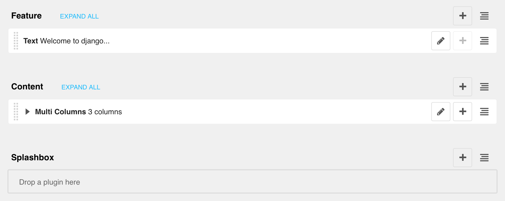
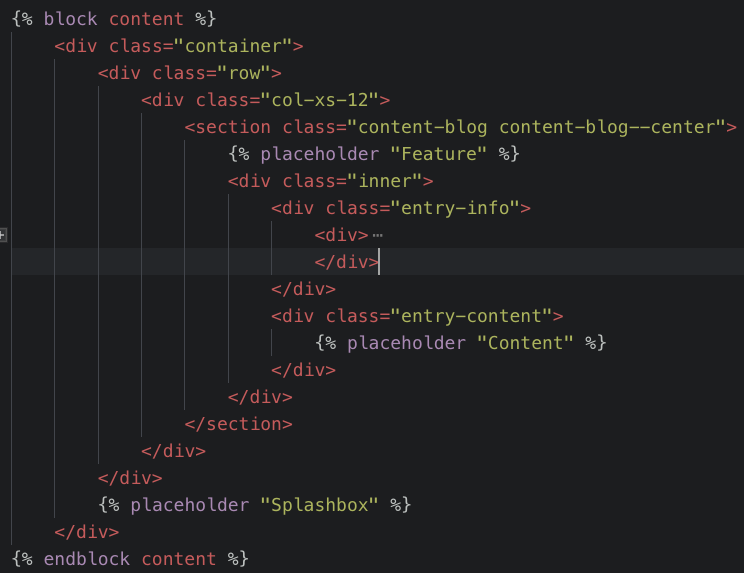

Django y django CMS
el tándem ideal para tu proyecto
Por Manuel Jesús Barrera Pozo
¿Qué es un CMS?
- Content Management System
- Crear, clasificar y publicar cualquier tipo de información en una página web
- Los CMS son utilizados para que personas ‘no técnicas’ puedan actualizar el contenido de una web de manera rápida y sencilla
Ejemplos de CMS
¿Qúe le falta a Django?
+
¿CMS?
Alguna opciones cms para Django...
¿Por qué django CMS?
- Fácil integración con Django
- No lo sustituye
- Es el más longevo
- Buen soporte y actualizaciones
- A CMS built for developers and content editors
¿Quién utiliza django CMS?
Principales características
- Page, Placeholders, Plugins (3P)
- Multilenguaje
- Control de versiones
- Modelo borrador-público
- Jerarquía de páginas (django-treebeard)
Y más...
- Apphooks (blogs, comunidad)
- Toolbar
- Menu
Arquitectura placeholder/plugin 
Arquitectura placeholder/plugin 
¡Vamos con la demo!
Conclusiones
- Múltiples formas de integración
- Aprovechar al máximo las características del framework Django
- Complemento perfecto para potenciar tu web